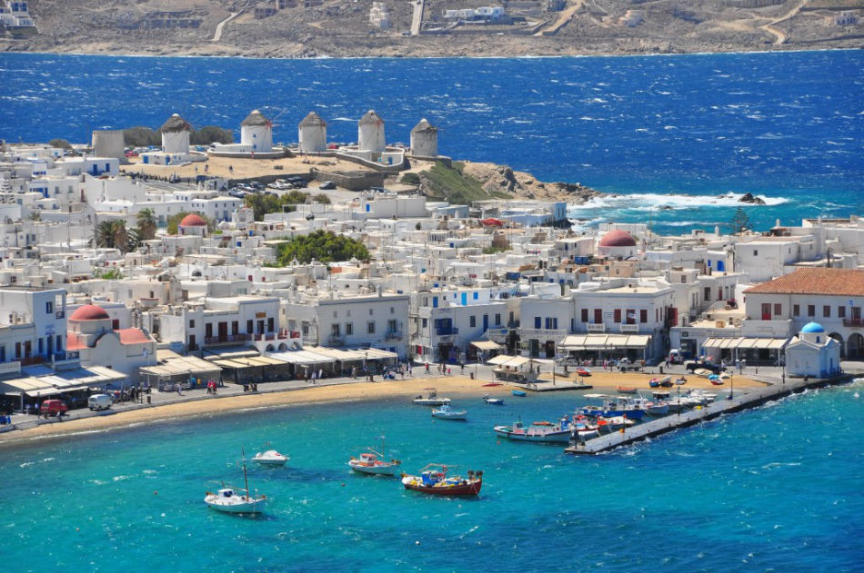
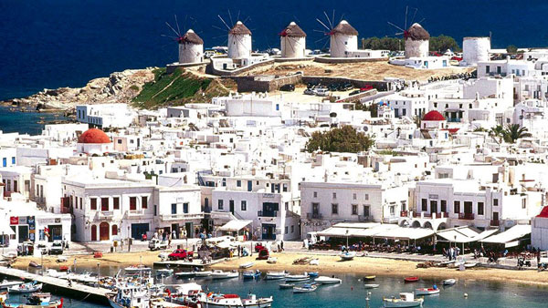
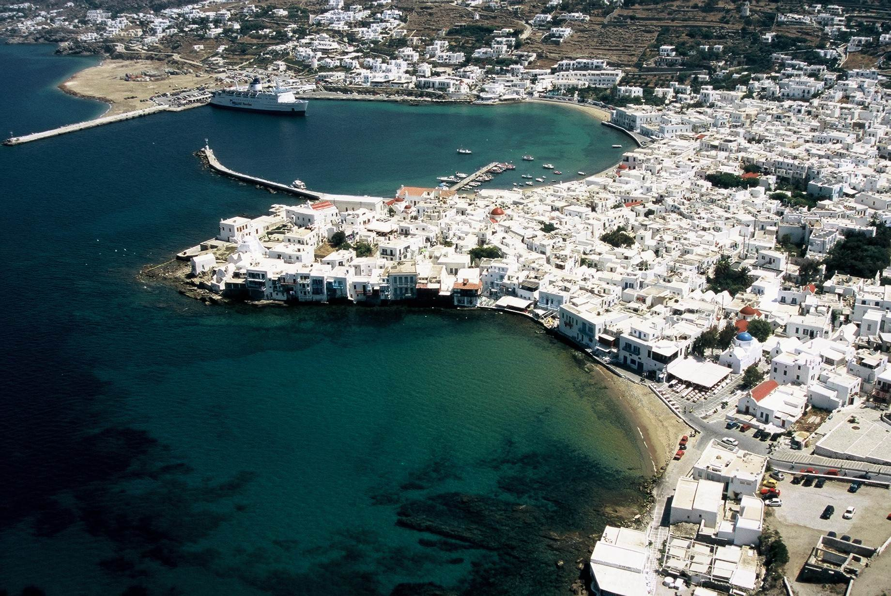

Mikonos je jedno ostrva u skupini Kiklada u Grčkoj. Upravno ostrvo čini zasebnu i jedinu opštinu u okviru okruga Mikonos Periferije Južni Egej. Ono uključuju i okolna ostrvca i hridi. Središte ostrva i glavno mesto okruga je gradić Mikonos. Mikonos je danas poznat kao veoma poznato turističko odredište sa kosmopolitskim karaterom i burnim noćnim životom. Mikonos je jedno od ostrva Kiklada srednje veličine, udaljeno oko 150 km jugoistočno od Atine. Najbliže značajnije ostrvo Mikonosu je Tinos na 10 km ka severozapadu. 20 km zapadno od Mikonosa nalazi se ostrvo Siros, a 25 km južno Naksos. Ostrvo je srednje razuđeno i planinsko u većem delu. Postoji nekoliko dolina, koje su pogodne za zemljoradnju. Mikonos spada u ostrva Kiklada koja su udaljena od kopna i imaju stalan nedostatak vode usled sušne sredozemne klime sa dugim, žarkim i sušnim letima i blagim i ne baš kišovitim zimama. Biljni i Životinjski svet su takođe osobeni za ovu klimu, a od gajenih kultura dominira maslina.
 Istorija: Danas postoji mit da je ostrvo dobilo ime po antičkom junaku koji se poredio sa Apolonom i po tome postao poznat. Za Mikonos, kao i za celokupne Kiklade, je neobično važno razdoblje kasne praistorije, tzv. Kikladska civilizacija, zavisna i bliska Kritskoj. Tokom stare Grčke Mikonos je prvo bio naseljen Joncima, a zatim jedan od malih polisa u veoma važnom delu Grčke. Posle toga Mikonosom je vladao stari Rim, a zatim i Vizantija. 1204. godine posle osvajanja Carigrada od strane Krstaša Kikladi potpadaju pod vlast Mlečana, pod kojima ostaju vekovima, do 16. veka, kada novi gospodar postaje osmansko carstvo. Stanovništvo Mikonosa nije bilo jače uključeno u Grčki ustanak 20ih godina 19. veka, ali je ostrvo odmah pripalo novoosnovanoj Grčkoj. Međutim, razvoj nove države nije sprečio iseljavanje mesnog stanovništva u 20. veku. Poslednjih decenija ovo je umanjeno razvojem turizma.

Hoteli:
- Makis place
- Eocabella Mykonos hotel
- Lithos by Spyros & Flora
- Aeolos Mykonos hotel
- Leonis summer houses
- Palladium boutique hotel
- Nissaki boutique hotel
- Myjonos princess hotel